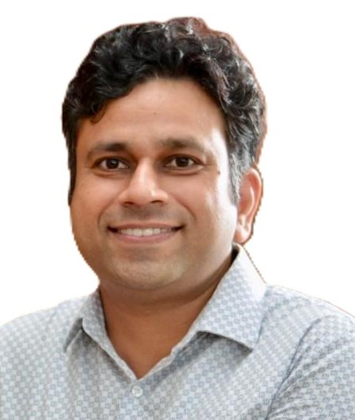

From shipping SAP country versions to governing nine-figure portfolios to writing LLM orchestration code — the arc isn't common. That's the point.

I started writing code in 2003. I spent seven years inside SAP — as a consultant, as a product contributor, and as a project manager — before moving into delivery leadership. For the last decade at Shell I've governed large technology portfolios, built Centres of Excellence, and made "value before scope" a habit rather than a slide.
The rare thing about my background: I've sat on every side of the table. I've written production code, shipped a commercial SAP country version, built the business case that unlocked a $20M revenue stream, governed ~$110M in concurrent investment, and I'm now writing LLM orchestration code on the side. That range is what I bring to a senior TPM role — the ability to hold the strategy conversation in the morning and the technical architecture review in the afternoon, with credibility in both rooms.
I'm based in India. I hold a Gold Medal in Computer Science, an Executive Post-Graduate Diploma in Operations Management (1st Rank, Symbiosis), and recent certifications in Blockchain from IIIT Bangalore and FinTech from IIM Kozhikode.